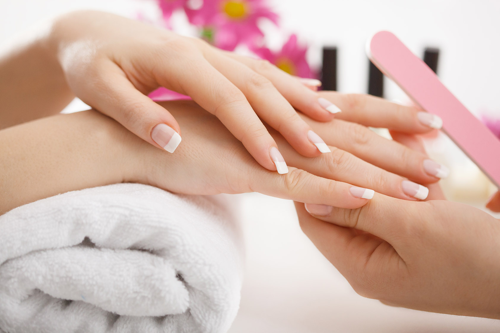
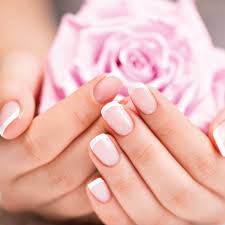

Manicura
Manicura 2018
Si aún no sabes qué manicura te va mejor, a continuación te dejamos una lista que seguramente se te verá fantástica. Anímate a hacerte ese cambio de look que tanto deseas ¡sin miedos!
Tatuajes en la cuticula
La decoración de las uñas no termina con el esmalte, Ahora existen nuevas formas de personalizar tu manicura ¡Tatuajes para la cutícula! Van en la cutícula o en la media luna de la uña, existen diferentes diseños: desde flechas hasta coronas, pueden usarse en todas las uñas o solo en unas 2 o 3, todo depende del efecto que busques


Manicura Semipermanente
Si desea unas uñas brillantes que no se desconchen y que duren más que su esmalte habitual, entonces la manicura de dos semanas es el tratamiento para usted. Usando una técnica revolucionaria que seca en cuestión de segundos con la luz UV, una manicura de dos semanas le dejará las uñas brillantes, fuertes y sin desconchados durante al menos dos semanas.
Manicura de dos Semanas
Una manicura de dos semanas empieza como cualquier otro tratamiento de uñas. Comienza en su salón habitual o bar de uñas, sentándose en una cómoda silla para que le retiren el esmalte que aún le pueda quedar. La única diferencia entre el gel y el Shellac son los propios productos. Resumiendo, una manicura en gel es una capa de gel de color que se aparenta mucho al esmalte de uñas. Marcas como OPI y Bio Sculpture Gel han creado esmaltes en gel, para que tenga una amplia variedad donde elegir a la hora de escoger un tono.
